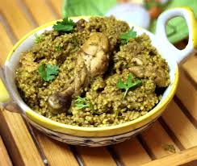

Dindigul biryani is a unique, popular South Indian dish originating from Dindigul, Tamil Nadu, known for its
distinct flavor profile and use of seeraga samba rice. It's characterized by a balance of spices, tender meat, and a unique flavor
that distinguishes it from other types of biryani.
SERVES 4

INGREDIENTS CHECK LIST
Cinnamon
Green Cardamom
Cloves
Star Anise
CKalpasi (Stone Flower)
Black Peppercorns
Ginger
Garlic
Seeraga Samba Rice
Ghee
Groundnut oil
Bay Leaves
Onion
Green Chilli
Coriander Leaves
Mint Leaves
Tomato
Red Chili Powder
Curd
Chicken Biryani Cut
Salt
Water
Lemon Juice
Ghee
Cooking Instructions
Heat a pan and dry roast the spices for the biryani masala till it is aromatic. Transfer it to a blender and grind it to a coarse powder.
Blend the ginger and garlic with little water to a fine paste. Keep it aside.
Wash and soak the rice for 20 minutes Heat a pot, add groundnut oil and ghee. Add the bay leaves and let it crackle. Then add the onions and saute till they turn translucent.
Add the green chilli and let it cook in the oil for a minute. Keep mixing it well. Then add the coriander and mint leaves and let it fry till it gives out an aroma. Add the ginger-garlic paste and cook it for a minute.
Add the tomatoes and cook it till it turns soft.
Add the red chilli powder, biryani masala, and cook it till it gives out an aroma. Add the curd, mix it well. Cook it until oil starts floating on top.
Add the chicken pieces and cook it till it is evenly coated with the masala. Add salt to it, and mix it well. Then cover and cook the chicken on a medium flame for 10 minutes.
Add the rice. Mix the rice gently for a minute in the masala. Add water, mix and bring it to a boil and let it cook till the rice and water are at the same level.
Place it on a preheated tawa and cook it on a dum on low flame for 15 minutes. Turn off the flame after 15 minutes and let it rest for another 5 minutes before opening the pot.
Add Ghee to it, fluff the rice and chicken pieces. And remove it from the stove.
Serve it hot with raita and accompaniments of your choice.